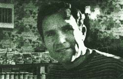

During the past 30 years, the legendary small family farm in the United States has been gobbled up by "progress" and transformed into something called agribiz . . . a mindless junkie with an ever-increasing need for an ever stronger chemical fix. This has generally been done in the name of efficiency and "cheap" food.
Cheap, yes. Inexpensive, no. For-although the trade was made, at least on the surface, to seem reasonable when it began-the hidden costs of the bargain are now becoming all too apparent.
In the poisoning of animals and people by excessive nitrate runoff from drugged fields. In the genetic damage still being caused by DDT residues. In the harm to farm workers and consumers from chemical pesticides and herbicides such as parathion and malathion. In the waste of five tons of coal to produce a single ton of concentrated, "hot" nitrogen fertilizer (while mountains of animal manure are used only to pollute streams and overload purification plants). In the attempts of the large petrochemical companies and other giant corporations to completely dominate agriculture in the United States and the rest of the world.
A few "organic" farmers and health food "nuts", it is true, resisted the chemical industry's panzer attack from the beginning. But their outposts of reason were soon overrun and, for years, they were forced to steadily retreat and retrench. It is to their credit, however, that the toughest of these individuals continued to stand as much ground as they could . . . even during the early 1960's, when all the big "smart" money was betting that the agribiz interests had won the war.
Well, they hadn't. As we now know, a whole new generation-tired of watching our natural resources being raped, fed up with tasteless plastic food and suspicious of power concentrated in a few hands-has rushed to reinforce those few holdouts for the "organic" way of life. And it is altogether fitting that this surge of support has lifted some of those guardians of the natural ways of growing and processing food to a level of success usually only dreamed of by the money-grubbing agribizzers.
And that's Frank Ford's life story in a nutshell. Fourteen years ago-when the chemical method of farming seemed destined to inherit the world-Frank began growing wheat on the high plains of Deaf Smith County in the northern panhandle of Texas. Deaf Smith had long been famous for its fertile soil, abundant trace minerals and the general good health of its people. Frank, however, soon found that he could improve even Deaf Smith County grains if he grew them using "organic" methods.
Ford also had his own ideas about how his grain should be processed. So he and a friend bought a mill and began stonegrinding the wheat he raised and selling the resulting flour whole . . . with all the bran and wheat germ left in.
Well, taking a stand for naturally grown and processed food was easy. Making such a stand economically viable-in the face of the multi-billion-dollar petrochemical-agribiz-supermarket society-was something else. The life that Frank had marked out for himself was rough going for the first six or seven years. He farmed in the summer from four in the morning until ten at night, and took construction jobs during the winter just to pay the bills and keep his tiny operation from going under.
During that formative period, Ford personally did most of the growing, grinding, sacking, trucking, warehousing, shipping, bookkeeping and other work around the struggling company he had named Arrowhead Mills. Slowly, the investment of time, money and energy began to pay off.
Today, Arrowhead Mills has blossomed into the country's largest natural foods wholesaler. Its four large waehouses-containing over 30,000 square feet of storage space-hold tons of food for shipment to a nationwide network of distributors. And the company continues to grow . . . faster than ever.
Now that his firm has a life of its own, Frank Ford devotes a great deal of energy to other projects. He has, for instance, spoken out for the small farmer from his position on an agricultural advisory committee in Washington, D. C Ford has also helped draw up plans for major sewage recycling projects for several cities and he has served as coordinator for an interdenominational social and spiritual service organization in his hometown of Hereford, Texas.
Frank has been directly or indirectly responsible for at least three recent books: New Harvest, a collection of his reflections and verse on the spiritual rejuvenation which Ford believes is sweeping the country; Pack to Nature: Nutrition Made Easy in the Home or in the Woods; and The Deaf Smith Country Cookbook.
Frank Ford credits his many associates with the growing success of Arrowhead Mills in particular and the natural foods industry in general. Without his human and down-to-earth leadership, however, many of the field's achievements would never have come to pass.
This-as we all know-is an age of scandal, decadence, insane military might, terrifying inflation, deteriorating standards and real and imagined potential catastrophes of every magnitude. Which makes it even more comforting and inspiring to now hear from a man who-against all odds-has bet every fiber of his being on that which he considered to be good and honest and worthwhile. And won.
The following interview with Frank Ford was conducted by Susan and Bruce Williamson at Arrowhead Mills in Deaf Smith County, Texas.
PLOWBOY: Frank, you founded Arrowhead Mills in 1960 to stone-grind and distribute Deaf Smith County whole-wheat flour. Since that time the business has been phenomenally successful. Now, however, some news commentators are claiming that the natural foods movement has been just a passing fad. Current food shortages and rising costs, they predict, will lead people to stop buying whole grain and non-chemicalized items. Have you noticed any such trend?
FORD: I don't think the natural-foods movement is over the hill at all. In fact, I think it's just coming into its own. The rest of the country is finally beginning to realize that we have to conserve our resources and utilize them correctly . . . that whole foods are best and natural growing methods are really the most efficient.
The movement will continue to develop as the public becomes more aware of the ecological destructiveness of bad farming . . . and of the internal environmental consequences of bad eating. There's been so much slanting in the food industry toward appearance and so-called "purity" that nutrition has suffered terribly. This country is sick in many ways. We just don't have the resources to continue to waste nutritional benefits. I think people are beginning to realize that it's sensible to use natural foods . . . and to eat low on the food chain.
PLOWBOY: Does that last remark mean you advocate vegetarianism?
FORD: I really don't want to make a lot of general statements on how one should eat, since no two of us are alike. Our bodies are controlled in large part by our spiritual and intellectual energies, of course, but the variation goes beyond that.
Even on the physical level, some of us seem to need certain things that others don't. A number of people can thrive on a fruit diet and certain climates are conducive to this. Other individuals may need meat, and still others do very well with macrobiotics. Some of the healthiest and strongest people I know, though, are vegetarians and have been all their lives.
If you eat low on the food chain, you not only take in a lot fewer pesticide residues . . . you also make more room for other people. I think we have to ask ourselves, "If everyone lived as I live, would there be enough to go around?" According to Frances Moore Lappe, an acre devoted to the production of plant protein yields 10 to 15 times the usable protein of an acre used for the production of meat. So, by becoming vegetarian, we conserve both protein and the land available for agriculture.
PLOWBOY: Frank, one of the most controversial aspects of the natural foods movement has been the attempt to define "organically grown" crops and to ascertain their value in the diet. Would you relate that nutritional value primarily to the presence of trace minerals in the soil on which a particular crop is raised?
FORD: Yes, in large part, I would. Many of the "establish ment" agricultural experts get defensive about this point and say that nutrition in food has no relation to the fertility of the soil in which it was grown. They can't support that statement and they know it. More and more research is being brought forward to show that trace minerals are extremely important to the healthy body . . . and if those minerals are not present in the soil, they won't turn up in the food. This is where Deaf Smith County's products really shine: The essential elements are here in great abundance.
Incidentally, one of the main ways to determine whether or not a plant has been organically grown is to test it for trace minerals. If the soil contains all the essential elements-in balance-these nutrients will have been absorbed by the organism's roots. Then, of course, you also check for absence of pesticide and herbicide residues.
It's true, though, that you can't tell in the laboratory whether a food has been raised on an artificial or a natural fertilizer. Both are converted to the same ions before the plant takes them up. The really important questions about any farming technique are, "Are you improving the soil? Are the bacteria being increased? Do you find earthworms? Do you see birds flying around and eating little bugs and singing . . . or are you killing those creatures?"
You shouldn't base the validity of organic agriculture strictly on the nutritional quality of the end product . . . although it'll hold its own in a fair test. You should base your judgment of natural farming methods on whether or not they maintain and improve-or deplete-the soil. If the improvement shows up as a plus in the food, that's an additional benefit.
PLOWBOY: The classic response to what you've just said, of course, is, "If all farmers used organic methods, the world would starve."
FORD: Well, the world has come to depend a lot on American agribiz products in recent years. This is one of the few areas in which we can really compete with foreign producers. That's all the more reason why we should give our attention to farming in such a way that our soil is increased in value rather than depleted. It does no good to use up the principal in the bank, and that's essentially what you're doing when you take a piece of soil that contains a high level of organic matter and start applying hot fertilizers to it.
What it boils down to is that chemical farming may solve a hunger problem in an underdeveloped country for five or ten years . . . while it, incidentally, always has the side effect of increasing the population and thereby making the problem bigger a little further down the road. But before long the land stops producing and starts eroding, the insect infestation becomes worse, free nitrates pollute the water supply, humans and animals begin getting sick . . . and then you've got a hunger problem that's really hell on wheels.
Organic farming simply comes down to maintaining and building the soil instead of putting it on a chemical trip. And the people who are making natural agriculture work on a commercial scale are doing it with less expense than the hot chemical farmers. They're using just plain common sense. And the net profit is getting better.
PLOWBOY: For example?
FORD: For example, here in the fields around Hereford, farmers can make two applications per season of braconid wasps on grain sorghum to control aphids . . . for $4.50 per acre. Yet many chemical growers spend $15.00 an acre on spray . . . only to have the bugs come back stronger each year, thereby making it "necessary" for the farmers to spray heavier than ever. So they not only lose on the sorghum but destroy the beneficial insects that would help other crops later in the year.
PLOWBOY: Even though many of the farmers around you are changing to more natural ways, there must still be a sizable number in Deaf Smith County who are still committed to hot chemical methods. Have you encountered any outright hostility to what you and other organic growers are doing?
FORD: Well, a lot of our neighbors are starting to come around because they can see the results . . . they can see who's making a profit. But we've never criticized anybody else's way of doing things. We've just tried to create a better way and let the others notice it. We don't go around stomping on the chemical farmers.
I gave a talk one night to the Lion's Club-which isn't my natural habitat-about natural foods and organic farming. The president of the club was a chemical salesman and I had some reservations about how he would receive what I was saying . . . but I just said what I had to say in a gentle way. And he came up to me afterwards and said, "You know, Frank, you're absolutely right." About a month later he quit chemical sales and went into another business.
So you never know. Hereford is a very open and fair community. I've been impressed by that for as long as I've been here. Most people want to be constructive and I think one of our objectives should be to give them that opportunity and not draw artificial boundaries around ourselves.
Actually, what I really believe in most of all is getting your hands dirty and working with the particular soil in your area. I got my degree in agronomy from Texas A & M but I didn't really know much about farming until I got out on the land. Even then, just when I'd think I had it all figured out, something would come along and make the whole next year different. The rainfall would vary, a hailstorm would wipe out a crop or the grasshoppers would arrive . . . and it'd be like another farm. In the winter of 1972 we had 17 snowfalls on our winter crop of wheat, when normally this area is lucky to get two or three. That extra moisture helped produce the biggest harvest I've seen since I started farming with my dad here in 1947.
PLOWBOY: How big is this farm?
FORD: Fifteen hundred acres . . . almost two and a halt square miles.
PLOWBOY: And how many people does it take to run the place?
FORD: Well, I've hired students in the past to help at rush times, but for the most part my son Dave and 1 handle the whole thing.
PLOWBOY: Two people! Farming 1,500 acres! That seems like an enormous task. Besides, most of us think of a family farm as comprising only a hundred acres or so . . . and automatically consider anything larger to be agribusiness.
FORD: You have to realize that there's a vast difference in the amount of land one person can work. We do have a family farming situation here mainly because dryland, non-irrigated agriculture pretty much takes care of itself after planting is over. But only two or three hundred acres would be a huge operation in a vegetable-growing area of California or British Columbia. Oftentimes, just three acres of vegetables is a full-time job for two people. So it depends on what you're raising and how intensive and continuous your care of that crop has to be.
PLOWBOY: A popular attitude seems to be that family farms are dying out because they can't compete with agribusiness.
FORD: That's nonsense. The family farmer should be able to hold his own with corporate agriculture any day of the week . . . he's doing his own work, he knows his soil and he can produce. But this is true only if the tax laws are equally and fairly applied.
If the big corporations can make a lot of money in the oil business by using their depletion allowance, for instance-and then take a big tax loss in their farming-that of course is unfair competition and shouldn't be allowed. But now farmers can get a fair price for their products on the open market . . . and once the tax laws are reformed, the family farm will certainly be competitive again.
PLOWBOY: That brings up a sore point: After all the years of government subsidies to farming, why are the prices of agricultural products suddenly rising?
FORD: We're not setting the prices of our commodities now. The Germans and the Japanese and the Arabs are. They've got dollars which they're converting to grain, and the devaluation of our currency allows them to push up our prices on those commodities. This situation will continue unless we set up export controls.
PLOWBOY: Could commodities such as grain actually replace gold as a stable base for a currency?
FORD: As people get hungry, staple foods will take on more economic importance. You can't eat gold.
While we're talking prices, it's important to realize that people in this country have gotten used to inexpensive food at the expense of the grower. Considering that the cost of tractors-for instance-has quadrupled in the last 25 years while the price of food-in many cases-has actually gone down, it's amazing that farmers have survived at all . . . even with the subsidies. Arrowhead used to pay around $2,000 a month in mill taxes to make up for the depressed price of grain. But the days of surpluses are over.
PLOWBOY: That's quite a tax bill! Arrowhead Mills must have been grinding a lot of flour right from the start.
FORD: No, not really. Back in 1960 I bought a company that was called Olde Mill and which consisted of just one stone grinder, one storage bin and an old railroad car I converted into an office. That was Arrowhead Mills in those days.
I began with the idea that I'd sell the wheat grown on these acres to anyone who wanted to buy it. I'd stone-grind quite a b it of it into flour, load up my old pickup truck and haul the bags around to grocery stores. And I did. I drove tens of thousands of miles to Wichita Falls and Dallas, competing with General Mills and Pillsbury for regular flour accounts . . . stone-ground against reconstituted, dollar for dollar. If the stores didn't want to buy my product, I'd mark the flour, put it on the shelf for them and leave it on consignment. And at that time, of course, most people thought flour should be white.
It took about eight years for Arrowhead Mills to really begin to grow, and we lost money the first five. But I was never discouraged, because I just knew it would work out sooner or later when more people started demanding better food.
Sure enough, around 1968, the demand for our flour began to grow. By the end of that year many folks thought Arrowhead Mills was some huge, successful corporation . . . but then they'd come down here and visit us at that old railroad car we still had for an office and they'd find out what a sweet little company it was. It's only in the last two or three years that we've become sizable.
It seems like every time we've needed people or talent or money, it's all come together on a really low budget . . . practically held together with baling wire and tape and faith in the Lord. I tell folks that smart people run the natural foods business now, but when it took somebody stubborn I fitted in pretty good.
PLOWBOY: Frank, now that you really are a "huge, successful corporation" with modern offices and warehouse space, do you feel that Arrowhead Mills is growing too large? It seems that you've at least doubled your business over the last few years.
FORD: We've quadrupled our total sales every year for the past three years. Ordinarily this kind of growth would be disastrous, like cancer. But it's been amazing the way it's worked out for us. Four years ago I had serious doubts that we should get any bigger than we were at that time (about $100,000 a year total sales). But now that we have grown, I find that we're able to serve in a much better way and that we meet lots of wonderful people we wouldn't have met otherwise.
Although Arrowhead Mills has grown in productivity, it really hasn't changed that much in structure. We have hardly any outside investment capital in the company, nor do we need or want any. The operation is owned and controlled by the people who work here . . . and their spirit is good, they're happy. We'll continue to make ownership available to more and more of our workers . . . and we'll continue to decentralize the power, which I think is altogether more efficient.
PLOWBOY: Have any of the large corporations or conglomerates attempted to buy you out?
FORD: Not over several dozen times. We've been approached by many large firms . . . investment bankers, Wall Street people and others from New York. But I've consistently opposed merging and conglomeratizing and pyramiding corporate structures. I think a conglomerate magnifies the weaknesses-not the strengths-of its component parts, and I think the point has been proven in this industry.
We aren't interested in selling, we are not interested in going public, we are not interested in merging with anyone. We may be a little dumb and a little slow, but we're going to get there, and we're going to maintain our pattern of growth and quality with our own capabilities here locally.
That's also the way we like to deal with other people. We'd rather do business with companies that are independent, so we can look each other in the face when we work together. We like to buy from farmers who know how to farm and do a lot of their own work. I've counseled that we and all our friends in the natural foods business should stay independent and steer a parallel course while still cooperating, helping one another, selling to one another. In fact, we buy many products from our own distributors. We ask them to be source people in their own areas. We're their customer just as they're ours.
I certainly welcome competition . . . I've even helped it. I've had some of the largest mills send us representatives so that we could teach them how to compete with us in stonegrinding grain. I'm happy to do that. Why should we be defensive about showing someone else how to produce and sell better food?
PLOWBOY: You mentioned your distributors, Frank . . . how many do you have?
FORD: About 32, scattered from Hawaii to Vancouver to New England to Florida.
PLOWBOY: How did you find them?
FORD: Well, about three years ago I just started traveling around the country and looking. I'd meet people who had a little store . . . almost invariably young folks with a big dream and no financial backing. We've selected that breed to be our distributors, and we've probably learned more from them than we've been able to give. The natural foods revolution has been brought about in large part by these people.
I usually visit my distributors two or three times a year. They tell me all the things Arrowhead Mills needs to do better . . . and I go home and try to do 'em.
PLOWBOY: Many Arrowhead Mills products are now being carried in regular grocery stores. Are you making any serious effort to expand your share of that market?
FORD: For some time now, Affiliated Foods here in Texas has carried our flour, cornmeal, cracked wheat cereal, granola and peanut butter. But in each area of the country we leave that kind of decision up to our distributors. Some work with regular grocery stores, others strictly with natural foods and health food retailers. We don't pressure them one way or the other. We know they know how to run their businesses.
PLOWBOY: So you don't exercise any strict control over your distributors?
FORD: None whatsoever. If they were willing to accept that kind of direction, I wouldn't want to work with them.
PLOWBOY: With the help of this network, Frank, you're distributing at least 150 different items now. How do you go about deciding what to stock?
FORD: If we like it, we buy it! I'm really a sucker for good food. Our main emphasis, though, has been to put together a collection of the best-quality grains, seeds and other staples we can find.
We're not attempting to convince our customers that they should rely on us for everything they eat. We've encouraged people for years to become as self-sufficient as possible, to grow their own gardens and sprout their own beans and buy whole foods-especially fresh produce and honey, for example-as close to their own location as they can. But Arrowhead Mills has filled a need for a lot of folks, particularly urban residents who can't efficiently grow the staples they need. So we're going to stay basic and always try to keep well stocked in wheat, rye, corn, soybeans, rice, sunflower seeds, millet, grain sprouts, lentils, sesame seeds and the like.
PLOWBOY: I see. How does your stock get here? Do your suppliers ship their products to Hereford?
FORD: No, Arrowhead Mills does the hauling. We have our own transport system so that we can deliver to our distributors in full truckloads and then pick up products from our suppliers. This helps us cut costs and give more efficient, dependable service. We have one refrigerated trailer, four dry-freight trailers and two stainless steel tankers for oils . . . plus four diesel tractor rigs to haul them all with.
PLOWBOY: That's quite an operation. The oils, for instance . . . where, do they come from and how are they handled?
FORD: We bring in safflower oil from California, soy from Nebraska, corn from Oklahoma and sesame from east Texas. All of them arrive fresh in the stainless steel tankers and are bottled here. The oils we sell are "expeller pressed"-there's no such thing as "cold pressed" except in the case of olive oil-and of course they're not chemically extracted or bleached. (In A Natural Foods Primer, Beatrice Trum Hunter explains that some heat is normally generated when oil is obtained by mechanical pressure. Nevertheless, such a product is much more healthful than one which is extracted by means of solvents and then refined . . . the normal commercial procedure. -MOTHER.)
PLOWBOY: What other foods are processed in your plant?
FORD: The rice is hulled right here, so that it can be sold fresh and so that our machines can remove any foreign matter. It's amazing what the stoner takes out . . . rocks and little pieces of glass. We have seven stone grinders for whole-wheat and corn flour. Then there are the two steel hammer impact mills. We use them to grind triticale-a hybrid combination of wheat and rye-and we sell that flour to a large company which makes pancake mix. The same machines also handle soy flour, which has too high an oil content for the stone grinders. And we make our own granola and do most of our own packaging.
PLOWBOY: And all on a scale no one dreamed of in 1960. After a tour of your warehouses, I'm beginning to see what you mean about increased volume!
FORD: We sell about $2,000 a day in peanut butter alone, make eleven or twelve wholesale shipments daily and get thirty to fifty inquiries from people who want recipe sheets or background on various foods. In many cases Arrowhead Mills provides a complete link between the farm and the consumer, and all our growth and increase in capacity is designed just to make this service possible.
Actually, I'd like to see more and more people with direct access to farms. I'd like to see organic agriculture practiced on small acreages close to the cities.
A good example is the situation in British Columbia. There are a lot of little organic farms around Vancouver, but many of them are going out of business because developers are moving in and offering them $20,000 an acre. Since the owners can make only $100 or $200 an acre farming the property-less than the interest on the offered price-they sell. At that rate, the province will sooner or later run short of good fertile acreage for food production.
British Columbia, however, has finally passed a law which forbids the sale for development purposes of land designated as agricultural. The subdividers and promoters are being told to go build on the slopes and leave the flat, fertile ground to be worked so that all can have enough to eat.
PLOWBOY: In the absence of such legislation, land trusts would have a similar effect of removing the temptation to sell out to developers.
FORD: I favor anything that creates a sense of responsibility for the proper use of the land . . . whether it be a land trust or just the consciousness of individual possession. I certainly don't think that state ownership is ever a good answer. One proof, I believe, is that we've exported a lot of wheat to Russia in spite of the Soviet Union's own vast fertile acreage.
There's always a conflict between individual ownership-the whole realm of private property and individual freedoms-and the public good. The only way that conflict can really be resolved satisfactorily is through individual concern about society and the future. You can't really legislate consciousness . . . but you can put consciousness into legislation, and I think we could use some of that.
I believe, though, that-as people become more aware of their loss of control over the events in their lives-they're going to turn more toward a self-sufficient lifestyle and stop looking to the government for all the answers. They'll begin to regain power over their own affairs, and at the same time to take responsibility for their impact on the planet. That means-for example-having a garden, eating whole foods and choosing a backpack instead of a camper-trailer, a canoe instead of a motorboat, a bicycle instead of a car. And every day, this kind of consciousness and responsibility is growing across the land.
PLOWBOY: In your own writings you've linked this consciousness with stewardship of the earth, mental health, respect for all fellow men and spiritual growth and renewal . . . and called it the New Age.
FORD: Yes, the New Age is coming. That's one thing Arrowhead Mills has meant to me: an opportunity to help increase awareness and concern for some of the basic values and realities on this earth. I hope that in some small way it will continue to contribute to the rebuilding of this planet and-if you will-its rebirth. But the future is in God's hands.
Note: Check out Arrowhead Mill's website for a distributor near you.
|
 |
|
|